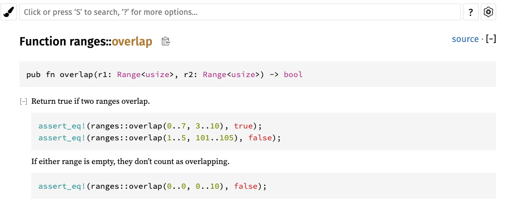
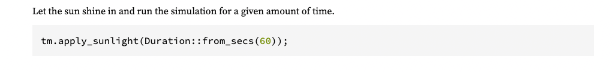

【Rust】Crate 和 Module
Crates
Rust 程序是由 crate 组成的，每个 crate 都是一个完整的的单元：单个库或可执行文件的所有源代码，以及任何相关的测试、示例、工具、配置和其他东西。可以使用 cargo build --verbose 查看项目中使用了哪些 crates。
通常项目的依赖都是配置在 Cargo.toml 文件中，例如：
1 | [dependencies] |
可以通过 cargo build，cargo install 或者 cargo add 下载依赖代码。一旦有了源代码，Cargo 就会编译所有的 crate。它为项目依赖图中的每个 crate 运行一次 rustc（Rust 编译器）。编译库时，Cargo 使用 --crate-type lib 选项。这告诉 rustc 不要寻找 main() 函数，而是生成一个 .rlib 文件，其中包含可用于创建二进制文件和其他 .rlib 文件的编译代码。例如：
1 | rustc --crate-name num --edition=2018 /Users/fudenglong/.cargo/registry/src/mirrors.ustc.edu.cn-61ef6e0cd06fb9b8/num-0.4.0/src/lib.rs --error-format=json --json=diagnostic-rendered-ansi,artifacts,future-incompat --crate-type lib --emit=dep-info,metadata,link -C embed-bitcode=no -C split-debuginfo=unpacked -C debuginfo=2 --cfg 'feature="default"' --cfg 'feature="num-bigint"' --cfg 'feature="std"' -C metadata=b84820de50dc7f78 -C extra-filename=-b84820de50dc7f78 --out-dir /Users/fudenglong/WORKDIR/rust/mandelbrot/target/debug/deps -L dependency=/Users/fudenglong/WORKDIR/rust/mandelbrot/target/debug/deps --extern num_bigint=/Users/fudenglong/WORKDIR/rust/mandelbrot/target/debug/deps/libnum_bigint-bd772250e89d4bb9.rmeta --extern num_complex=/Users/fudenglong/WORKDIR/rust/mandelbrot/target/debug/deps/libnum_complex-d3fd80f953e1ac52.rmeta --extern num_integer=/Users/fudenglong/WORKDIR/rust/mandelbrot/target/debug/deps/libnum_integer-7ff0466209086397.rmeta --extern num_iter=/Users/fudenglong/WORKDIR/rust/mandelbrot/target/debug/deps/libnum_iter-2b149e71dbad2afc.rmeta --extern num_rational=/Users/fudenglong/WORKDIR/rust/mandelbrot/target/debug/deps/libnum_rational-1686ad6eb82c18d4.rmeta --extern num_traits=/Users/fudenglong/WORKDIR/rust/mandelbrot/target/debug/deps/libnum_traits-deaceb32c41a04f1.rmeta --cap-lints allow |
对于每个 rustc 命令，Cargo 都会传递 --extern 选项，给出 crate 将使用的每个库的文件名。这样，当 rustc 看到像 use num::bigint::BigInt; 这样的代码行时，它可以确定 num 是另一个 crate 的名称，并且通过 Cargo，可以在磁盘上找到已编译的 crate。Rust 编译器需要访问这些 .rlib 文件，因为它们包含库的编译代码， Rust 会将该代码静态链接到最终的可执行文件中。 .rlib 还包含类型信息，因此 Rust 可以检查我们在代码中使用的库功能是否确实存在，以及我们是否正确使用它们，它还包含 crate 的公共内联函数、泛型和宏的副本等。
如果编译程序时，Cargo 使用 --crate-type bin，结果将会生成目标平台的二进制可执行文件。
Edition
Rust 具有极强的兼容性保证，在 Rust 1.0 上编译的任何代码都必须在 Rust 1.50 上编译。但有时社区会遇到令人信服的扩展语言的提议，这会导致旧代码不再编译。例如，经过多次讨论，Rust 确定了一种支持异步编程的语法，将标识符 async 和 await 重新用作关键字。但是这种语言更改会破坏任何使用 async 或 await 作为变量名称的现有代码。
为了在不破坏现有代码的情况下发展，Rust 使用 Edition。Rust 2015 版与 Rust 1.0 兼容。2018 将 async 和 await 更改为关键字，简化了模块系统，并引入了与 2015 不兼容的各种其他语言更改。打开 Cargo.toml 我们会看到如下的 Edition 声明，默认是 2021：
1 | [package] |
Rust 的编译器承诺始终接受该语言的所有现存版本，并且程序可以自由地混合使用不同版本编写的 crate，例如，2015 的 crate 依赖于 2018 的 crate 甚至可以，换句话说，一个 crate 的版本只影响其源代码的解释方式，代码编译完成之后，就没有所谓的 Edition 区分了，在学要使用语言的新功能时，我们只需要修改 Edition即可。
版本不会每年都发布，只有在 Rust 项目决定需要时才会发布，例如，没有 2020 版，将版本设置为 2020 会导致错误。Rust 版本指南 涵盖了每个版本中引入的更改，并提供了版本系统的良好背景，对于新代码，建议总是使用最新的版本，cargo new 默认在最新版本上创建新项目。如果有一个用旧版 Rust 编写的 crate，cargo fix 命令会帮助你自动将代码升级到新版本。
Profile
配置文件提供了一种更改编译器设置的方法，影响优化和调试符号等内容。Cargo 有 4 个内置配置文件：dev、release、test 和 bench。如果未在命令行上指定配置文件，则会根据正在运行的命令自动选择配置文件。除了内置配置文件外，还可以指定自定义的用户定义配置文件。
可以使用 [profile] 在 Cargo.toml 中更改配置文件设置，在每个命名配置文件中，可以使用如下键/值对更改各个设置：
1 | [profile.dev] |
cargo build 会使用 [profile.dev] 的配置，cargo build --release 会使用 [profile.release] 的配置，cargo test 使用 [profile.test] 中的配置。
更多详细的内容请看 Cargo Profiles。
Module
crate 就是第三方模块，用于项目之间的代码共享，而 Module 是项目内的代码组织。它们充当 Rust 的命名空间、构成 Rust 程序或库的函数、类型、常量等的容器。一个模块如下所示：
1 | mod spores { |
本例中，模块是 Spore 结构和两个函数的集合。pub 关键字使得标记的项公开，因此可以从模块外部访问它。
一个函数被标记为 pub(crate)，这意味着它在这个 crate 内的任何地方都可用，但不作为外部接口的一部分公开。它不能被其他 crate 使用，也不会出现在这个 crate 的文档中。被标记为 pub 的项目通常称为导出该项目，任何未标记为 pub 的内容都是私有的，只能在定义它的同一模块或任何子模块中使用：
1 | let s = spores::produce_spore(&mut factory); // ok |
模块嵌套
模块可以嵌套，一个模块可能仅仅是子模块的集合：
1 | mod plant_structures { |
如果希望嵌套模块中的项目对其他 crate 可见，必须将到达这个项的所有模块都标记为 pub。也可以指定 pub(super)，使项目仅对父模块可见，以及 pub(in <path>)，使其在特定父模块及其后代中可见。这对于深度嵌套的模块特别有用：
1 | mod plant_structures { |
通过这种方式，我们可以编写一个完整的程序，包含大量代码和整个模块层次结构，以我们想要的任何方式组织起来，而所有这些都在一个源文件中。
模块和文件系统
如果将模块以单个文件形式组织，这种方式工作很痛苦，大型项目中往往需要拆分，将不同的功能的代码以不同的文件区分，使得代码在逻辑上，物理组织上都能很清晰。
单文件模块
之前我们是在 spores 模块中使用括号将模块的内容包裹起来的，现在可以在单个源码文件中开发模块。我们在 main.rs 中声明如下模块：
1 | mod spores; |
然后在 spores.rs 开发该模块的代码：
1 | /// A cell made by an adult fern... |
公开和私有的原则和之前讲的是相同的，Rust 从不单独编译模块，即使它们在单独的文件中：当你构建一个 crate 时，会重新编译它的所有模块。当 Rust 看到一个模块时，例如上面的 mod spores; 时，它会检查 spores.rs 和 spores/mod.rs 是否存在，如果都存在或者都不存在，就会报错。
模块目录（一）
但是当我们的模块中包含子模块时，就不能像 spores.rs 那样单独处理了，就像之前的 plant_structures 模块。如果，我们有下面这样的结构：
1 | fern_sim/ |
在 main.rs，我们声明 plant_structures 模块，这会让 Rust 加载 plant_structures/mod.rs：
1 | pub mod plant_structures; |
然后，我们再声明子模块：
1 | pub mod roots; |
这三个模块的内容存储在名为 leaves.rs、roots.rs 和 stems.rs 的单独文件中，和 plant_structures/mod.rs 同级。
模块目录（二）
我们也可以使用文件和目录一起组成模块，如果之前的 stems 需要包含 xylem 和 phloem，我们选择保留 plant_structures/stems.rs，然后再添加一个 stems 目录：
1 | fern_sim/ |
然后，我们可以在 stems.rs 中声明两个新模块：
1 | pub mod xylem; |
所以这里有三种模块组织方式：
- 模块在他们自己的文件中；
- 模块在他们自己的目录中，带有
mod.rs； - 模块在他们自己的文件中，带有包含子模块的补充目录；
导入
:: 操作符被用于访问其他模块的功能。我们可以直接使用其他模块中的功能而不实现导入，例如：
1 | std::mem::swap(&mut s1, &mut s2); |
std 指向标准库的顶层模块，mem 是其中的一个子模块，std::mem::swap 只是其中的一个导出函数。上面的这种使用访问方式有点冗长，另一种方式是将要使用的功能导入当前的模块，使用 use 将 std::mem 引入到当前模块，并且定义新的别 mem：
1 | use std::mem; |
我们可以写 use std::mem::swap; 导入 swap 函数本身而不是 mem 模块。但最好的方式是：导入类型、trait和模块（如 std::mem），然后使用相对路径访问其中的函数、常量和其他成员。例如：
1 | use std::collections::{HashMap, HashSet}; // 同时导入 |
我们也可以使用 as 对导入的名称进行重命名：
1 | use std::io::Result as IOResult; |
子模块不会自动导入父模块的内容，假设我们的 proteins/mod.rs 中内容是这样子的：
1 | pub enum AminoAcid { ... } |
那么模块 proteins/synthesis.rs 中如果不导入 AminoAcid 是不能直接使用的：
1 | pub fn synthesize(seq: &[AminoAcid]) // error: can't find type `AminoAcid` |
而是，每个模块都是以一个空的状态开始的，必须手动导入它使用的任何内容（也不完全是空的，有预导入）：
1 | use super::AminoAcid; // explicitly import from parent |
默认情况下，是从当前模块开始导入：
1 | pub mod synthesis; |
self 是当模块的昵称，因此在 proteins/mod.rs 中可以这样写：
1 |
|
也可以简化为：
1 | use AminoAcid::*; |
除了从顶层模块导入，从 self 当前模块导入或者从当前的子模块导入之外，还可以通过 super 或者 crate 关键字进行导入，其中 super 表示父模块，而 crate 表示当前模块的 crate。
使用相对于 crate 根目录的导入而不是相对于当前路径的导入，有助于在项目中移动代码。因为如果当前模块的路径发生更改，所有导入都不会中断。例如：
1 | use crate::proteins::AminoAcid; // 显示从 crate 的根导入 |
之前看了从父模块导入子模块，但是如果从子模块导入父模块的内容，可以使用 super::。
如果你有一个模块和外部 crate 同名，在导入的时候就要注意了，否则会引起错误。例如，如果引用了 image，自己也有个 image 模块：
1 | mod image { |
解决这个问题的方法是使用绝对导入，导入以 :: 开始，例如，如果要导入第三方 image，可以这样写：
1 | use ::image::Pixels; // the `image` crate's `Pixels` |
引入内部的 image module 可以这样写：
1 | use self::image::Sampler; // the `image` module's `Sampler` |
预导入
之前说每个模块都以空的状态开始，但其实也不完全是空的，因为 Rust 有很多常用的类型，为了简化编程，Rust 会帮我们导入，不用我们显示导入。例如：Vec 和 Result。
自动导入的内容可以看这里，std::prelude。
别名导出
use 只是将我们使用的内容从其他模块或者 crate导入并且在本模块起了个没别名，但是它也可以将导入的内容重新导出。例如：
1 | pub use self::leaves::Leaf; |
这意味着 Leaf 和 Root 是 plant_structures 模块中的公共内容，它们也仍然是 self::leaves::Leaf 和 self::roots::Root 的别名。
结构体导出
module 可以包含用户定义的结构体类型，使用 struct 关键字引入，它和它的字段也可以由 pub 声明是否导出。一个简单的结构如下所示：
1 | pub struct Fern { |
结构体的所有字段，甚至私有字段，都可以在声明结构体的模块及其子模块中访问，在模块之外，只能访问导出字段。
静态变量和常量
const 关键字引入了一个常量。 语法和 let 一样，只是它可能被标记为 pub，并且类型是必需的。此外，大写名称对于常量来说是常规的：
1 | pub const ROOM_TEMPERATURE: f64 = 20.0; // degrees Celsius |
static 关键字引入了一个静态项，和 const：
1 | pub static ROOM_TEMPERATURE: f64 = 68.0; // degrees Fahrenheit |
常量有点像 C 中的 #define，值会被编译到使用的地方。静态变量是在程序开始运行之前设置并持续到退出的变量。在代码中使用常量作为 magic number 和字符串，对大量数据或任何需要借用常量值的引用的时候使用静态。
没有 mut 类型常量，静态变量可以标记为 mut，Rust 无法强制执行其关于对 mut 静态变量的独占访问的规则。因此，它们本质上是非线程安全的，安全代码根本不能使用它们，Rust 不鼓励全局可变状态：
1 | static mut PACKETS_SERVED: usize = 0; |
开发 library 项目
如果想要将项目编译成一个 lib 而不是一个可执行文件，我们只需要三步：
-
将
src/main.rs重命名成src/lib.js； -
添加
pub关键字给src/lib.js中的导出内容； -
移除
src/main.rs中的main函数；
我们不需要更改 Cargo.toml 中的任何内容 默认情况下，cargo build 查看源目录中的文件并确定要构建的内容。当它看到文件 src/lib.rs 时，就知道需要去构建一个 lib。src/lib.rs 中的代码构成了库的根模块，使用我们的其他 crate 只能访问此根模块的公共项目。
src/bin 目录
我们可以让一个项目是 lib，也可以让它同时编译成一个可执行程序，只是需要将 main 函数移到目录 sr/bin 中，而且可以有多个 main 函数，例如我的项目结构如下：
1 | ~/WORKDIR/rust/mandelbrot 20:15:24 |
各个文件的内容如下：
1 | use num::bigint::BigInt; |
1 | use mandelbrot::approx_sqrt; |
1 | use mandelbrot::approx_sqrt; |
1 | [package] |
我们可以指定运行不同的 main 函数：
~/WORKDIR/rust/mandelbrot 20:25:13
$ cargo run --bin mandelbrot
Finished dev [unoptimized + debuginfo] target(s) in 0.00s
Running `target/debug/mandelbrot`
4057691201/1283082416
~/WORKDIR/rust/mandelbrot 20:25:15
$ cargo run --bin mandelbrot_v2
Compiling mandelbrot v0.1.0 (/Users/fudenglong/WORKDIR/rust/mandelbrot)
Finished dev [unoptimized + debuginfo] target(s) in 0.15s
Running `target/debug/mandelbrot_v2`
4057691201/1283082416
属性
Rust 程序中的任何项目都可以用属性进行修饰。属性是 Rust 用于向编译器编写杂项指令和建议的语法。例如，假设您收到以下警告：
libgit2.rs: warning: type `git_revspec` should have a camel case name
such as `GitRevspec`, #[warn(non_camel_case_types)] on by default
但是你选择这个名字是有原因的，你希望屏蔽这个告警，可以通过在类型上添加 #[allow] 完成：
1 |
|
条件编译是使用属性编写的另一个功能，即 #[cfg]：
1 | // 只有在编译安卓平台的项目时包含这个模块 |
#[cfg] 常用的属性可以看 条件编译。
给函数添加 #[inline] 属性可以建议编译器根据情况决定是否内联函数。
1 |
|
当一个 crate 中定义的函数或方法在另一个 crate 中被调用时，Rust 不会内联它，除非它是泛型的或显式标记为 #[inline]。Rust 还支持更直接的 #[inline(always)]，要求在每个调用点内联扩展函数，并支持 #[inline(never)]，要求永远不要内联函数。
一些属性，如 #[cfg] 和#[allow]，可以附加到整个模块并应用于其中的所有内容。其他的，如 #[test] 和#[inline]，必须附加到单个项目，每个属性都是可以指定参数进行定制，这里看完整的属性列表。
要将属性附加到整个 crate，请将其添加到 main.rs 或 lib.rs 文件的顶部，在任何内容之前，然后写 #! 而不是#，像这样：
1 |
|
#! 通常只用于文件的开头，用于将属性附加到整个模块或 crate。某些属性总是使用 #! 语法，因为它们只能应用于整个 crate。 例如，#![feature] 属性用于打开 Rust 语言和库的不稳定特性，这些特性是实验性的，因此可能存在错误，或者将来可能会被更改或删除。
例如，Rust 为跟踪宏的扩展提供了实验性支持，比如 assert!，但是由于这种支持是实验性的，你只能通过
- (1) 安装
nightly版本的Rust； - (2) 来使用
#![feature(trace_macros)]明确使用trace_macros；
1 |
|
单元测试
Rust 内置了一个单元测试框架，任何由 #[test] 标记的普通函数是测试函数：
1 |
|
cargo test 用于运行项目中的所有测试函数：
$ cargo test
Compiling math_test v0.1.0 (file:///.../math_test)
Running target/release/math_test-e31ed91ae51ebf22
running 1 test
test math_works ... ok
test result: ok. 1 passed; 0 failed; 0 ignored; 0 measured; 0 filtered out
可以通过 cargo test TESTNAME 指定要运行的测试函数需要包含的关键字，以运行某些测试。
通常使用 asset! 和 asset_eq! 在测试中对结果进行断言，如果断言失败，程序就会 panic。asset! 和 asset_eq! 没有包含在 release 版本中，如果仅仅是构建 debug 版本，可以使用 debug_assert! 和 debug_assert_eq!。
为了测试错误情况，可以添加 #[should_panic] 给测试函数，这个例子中我们也使用了 #allow 允许我们无条件 panic：
1 | /// This test passes only if division by zero causes a panic, |
还可以从测试中返回 Result<(), E>：
1 | /// if 1024 是有效的数字，这个测试会通过 |
标有#[test] 的函数是会条件编译的。普通的 cargo build 或 cargo build --release 会跳过测试代码。但运行 cargo test 时，Cargo 会构建程序两次：一次以普通方式，一次来运行测试。这意味着单元测试可以与他们测试的代码一起使用，如果需要，可以访问内部实现细节，而且没有运行时成本。但是，它可能会导致一些警告。 例如：
1 | fn roughly_equal(a: f64, b: f64) -> bool { |
在省略了测试代码的构建中，roughly_equal 似乎没有被使用，Rust 会报错：
$ cargo build
Compiling math_test v0.1.0 (file:///.../math_test)
warning: function is never used: `roughly_equal`
--> src/crates_unused_testing_function.rs:7:1
|
7 | / fn roughly_equal(a: f64, b: f64) -> bool {
8 | | (a - b).abs() < 1e-6
9 | | }
| |_^
|
= note: #[warn(dead_code)] on by default
按照约定，当测试代码需要一些代码支持时，需要放进 tests 模块，并且使用 #[cfg(test)] 标记整个模块：
1 | // include this module only when testing |
集成测试
我们可以在 src 目录同级创建一个 tests 目录，用于放我们的集成测试代码，集成测试将我们的库代码当做外部 crate 链接然后进行测试，因此集成测试也只能测试公共 API：
1 | use fern_sim::Terrarium; |
cargo test 命令会同时运行集成测试和单元测试，如果只想运行 tests/unfurl.rs 中的集成测试代码，可以使用 cargo test --test unfurl。
文档
cargo doc 命令可以生成 crate 的文档，文档中会包含库中 pub 内容的文档，文档就是添加到它们上面的注释。例如：
1 | /// Simulate the production of a spore by meiosis. |
当 Rust 看到三个斜线开头的注释时，就相当于使用 #[doc]，上面的例子等价于：
1 |
|
除了 /// 样式的注释之外，还有 //!，被当做 #![doc]，经常用于模块或者 crate，例如 src/lib.rs 可能像下面这样：
1 | //! Simulate the growth of ferns, from the level of |
注释的内容会被当做 Markdown 格式，还可以包含 Html 标记。注释有个特色功能就是可以用 Rust 的模块组织路径去引用 Rust 定义的函数，结构体等。例如：
1 | /// Create and return a [`VascularPath`] which represents the path of |
还可以添加搜索别名，以便使用内置搜索功能更轻松地查找内容。在这个 crate 的文档中搜索 path 或 route 都能找到 VascularPath：
1 |
|
还可以使用 backticks 在运行文本的中间设置一些代码，在输出中，这些片段将被格式化为固定宽度的字体。可以通过缩进4个空格来添加更大的代码示例：
1 | /// A block of code in a doc comment: |
也可以使用 Markdown 格式的代码风格，有同样效果：
1 | /// Another snippet, the same code, but written differently: |
还有很多注释类型，可以参考这里 注释。
文档测试
当运行测试的时候，Rust 会检查所有出现在文档中的代码块，编译成一个独立的 crate，然后和我们的库链接并执行。下面是一个用 cargo new --lib ranges 创建的例子，把下面的代码的放入 ranges/src/lib.rs 中：
1 | use std::ops::Range; |
使用 cargo doc --no-deps --open 应该能看到下面的文档：

如果运行 cargo test 会看到如下的信息：
~/WORKDIR/rust/ranges ⌚ 9:57:08
$ cargo test
Finished test [unoptimized + debuginfo] target(s) in 0.00s
Running unittests src/lib.rs (target/debug/deps/ranges-13060b2daf473d43)
running 0 tests
test result: ok. 0 passed; 0 failed; 0 ignored; 0 measured; 0 filtered out; finished in 0.00s
Doc-tests ranges
running 2 tests
test src/lib.rs - overlap (line 5) ... ok
test src/lib.rs - overlap (line 10) ... ok
test result: ok. 2 passed; 0 failed; 0 ignored; 0 measured; 0 filtered out; finished in 0.63s
如果你将 cargo test --verbose，你会看到它使用 rustdoc --test 来运行这两个文档中的测试。rustdoc 将每个代码示例存储在一个单独的文件中，添加几行样例代码，以生成两个程序。 例如：
1 | use ranges; |
doc test 背后的想法不是把所有的测试都放在文档中，而是确保文档中的代码能正常编译运行。一个代码示例将包含一些诸如导入类的东西，但是如果想在代码中隐藏，可以以 # 开头：
1 | /// Let the sun shine in and run the simulation for a given |
生成的文档如下图所示，省略了 # 开头的导入：

有时在文档中展示一个完整的示例程序会很有帮助，包括一个 main 函数。 rustdoc 将包含确切字符串 fn main 的任何代码块视为一个完整的程序，并且不会向其中添加任何内容。
如果我们想要实际编译代码块，但又不行让 rust 运行它，可以添加 no_run 标记：
1 | /// Upload all local terrariums to the online gallery. |
但是如果也不想编译，那么使用 ignore，而不是 no_run。如果代码块根本不是 Rust 代码，请使用语言的名称，如 c 或 sh，或 text（表示纯文本），它将任何它无法识别的注释视为表明代码块不是 Rust，这会禁用代码高亮和文档测试。
依赖声明
关于依赖声明，详细请看 cargo 依赖声明。
-
image = "0.6.1"：指定版本号，从crates.io下载依赖： -
image = { git = "https://github.com/Piston/image.git", rev = "528f19c" }：指定版本号和原本下载路径； -
image = { path = "vendor/image" }指定包含依赖源代码的相对目录；
依赖版本号
当我们在 Cargo.toml 文件中写入类似 image = "0.13.0" 的内容时，Cargo 对此的解释相当松散，它使用被认为与 0.13.0 版本兼容的最新版本的 image。兼容性规格改编自 语义化版本 2.0.0。
-
以
0.0开头的版本号非常原始，以至于Cargo从不认为它与任何其他版本兼容； -
以
0.x开头的版本号（其中x非零）被认为与0.x系列中的其他点版本兼容。 我们指定了image版本0.6.1，但如果可用，Cargo将使用0.6.3； -
一旦项目达到
1.0，由于新的主版本会破坏兼容性。因此，如果要求版本2.0.1，Cargo可能会使用2.17.99，而不是3.0；
默认情况下，版本号是灵活的，否则使用哪个版本的问题很快就会变得过分约束。假设一个库 libA 使用 num = "0.1.31" 而另一个库 libB 使用 num = "0.1.29"。如果版本号需要完全匹配，则没有项目能够同时使用这两个库，允许 Cargo 使用任何兼容版本是一个更实用的默认设置。
尽管如此，不同的项目在依赖关系和版本控制方面有不同的需求。可以使用运算符指定确切的版本或版本范围：
Cargo.toml |
解释 |
|---|---|
image = "=0.10.0" |
完全匹配 0.10.0 版本 |
image = ">=1.0.5" |
使用 1.0.5 或者更高的版本，甚至 2.9 |
image = ">1.0.5 <1.1.9" |
使用大于 1.0.5 但小于 1.1.9 的版本 |
image = "<=2.7.10" |
小于 2.7.10 的任何版本 |
* |
任何版本 |
Cargo.lock
Cargo.toml 中的版本号很灵活，但我们不希望 Cargo 每次构建时都将我们升级到最新的库版本。因此，Cargo 有一个内置机制来防止这种情况。第一次构建项目时，Cargo 会输出一个 Cargo.lock 文件，该文件记录了它使用的每个 crate 的确切版本。以后的构建将参考这个文件并继续使用相同的版本。Cargo 仅在你告诉它时才升级到较新的版本，通过手动增加 Cargo.toml 文件中的版本号或运行 cargo update：
$ cargo update
Updating registry `https://github.com/rust-lang/crates.io-index`
Updating libc v0.2.7 -> v0.2.11
Updating png v0.4.2 -> v0.4.3
cargo update 仅升级到与在 Cargo.toml 中指定的内容兼容的最新版本。如果你指定了 image = "0.6.1"，并且你想升级到 0.10.0 版本，你必须在 Cargo.toml 中改变它。下次构建时，Cargo 会更新到新版本的镜像库，并将新版本号存储在 Cargo.lock 中。前面的示例显示 Cargo 更新了 crates.io 上托管的两个 crate，存储在 Git 中的依赖项也会发生类似的情况。假设我们的 Cargo.toml 文件包含以下内容：
image = { git = "https://github.com/Piston/image.git", branch = "master" }
如果 cargo build 发现我们有一个 Cargo.lock 文件，它不会从 Git 存储库中提取新的更改。而是读取 Cargo.lock 并使用与上次相同的版本。但是 cargo update 将从 master 中提取，以便我们的下一个构建使用最新版本。
Cargo.lock 会自动生成，通常不会手动编辑它。如果项目是可执行文件，应该将 Cargo.lock 提交给版本控制。这样，每个人构建的项目都将始终获得相同的版本，Cargo.lock 文件的历史记录将记录你的依赖更新。
如果你的项目是一个普通的 Rust 库，不要提交 Cargo.lock。因为下游项目也拥有 Cargo.lock 文件，其中包含其整个依赖关系图的版本信息，他们会忽略依赖的库中的 Cargo.lock 文件。
在极少数情况下，项目如果是共享库（即输出是 .dll、.dylib 或 .so 文件），没有这样的下游项目，应该提交 Cargo.lock。
Cargo.toml 灵活的版本说明符使我们可以轻松地解决依赖之间的兼容性。 Cargo.lock 保证了构建一致性。
发布到 crates.io
详情请看 发布到 crates.io。
工作区间
详情请看 Cargo 工作空间。